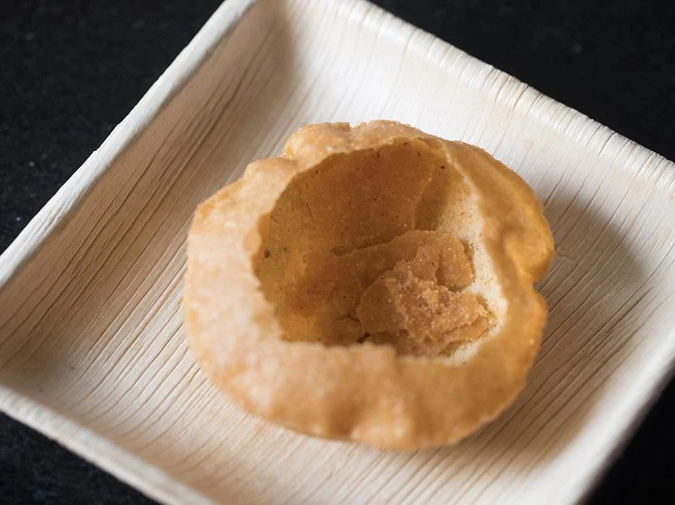
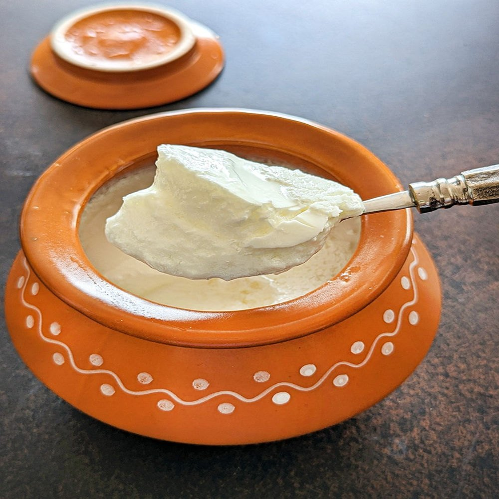
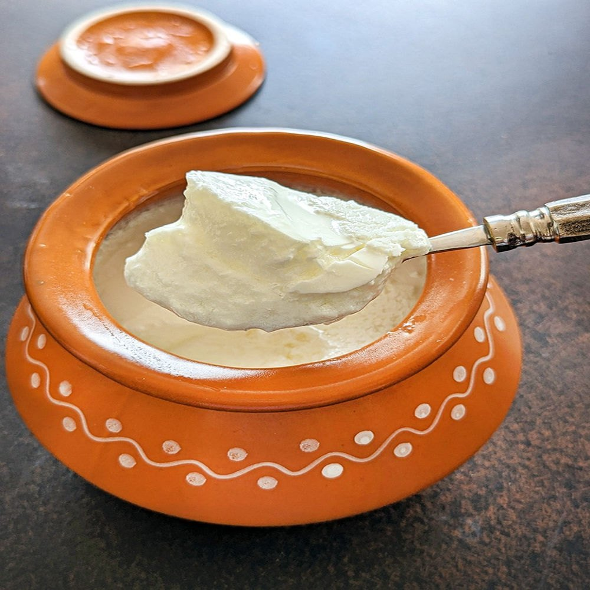
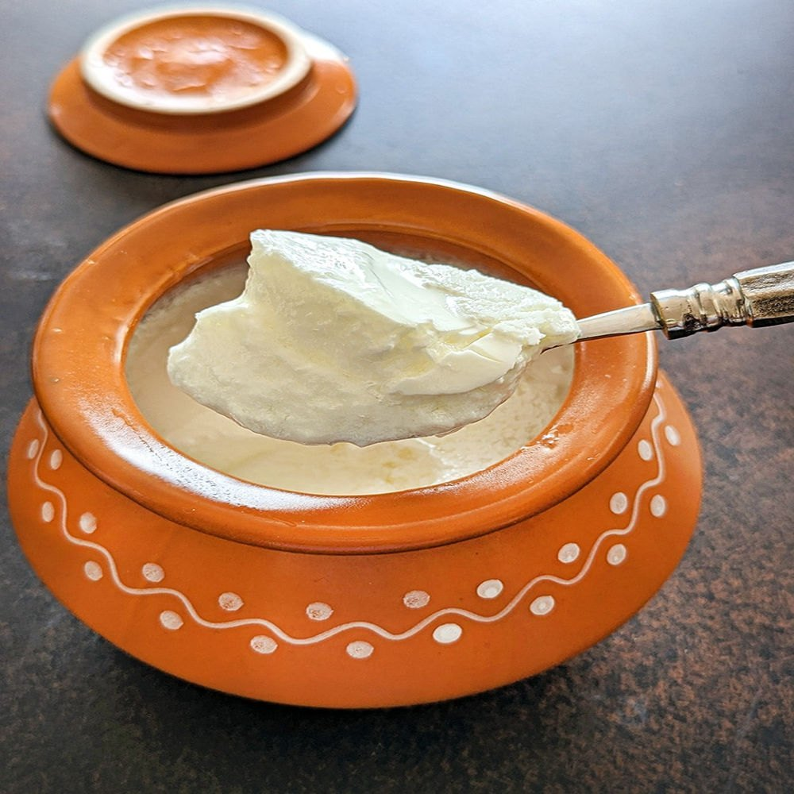
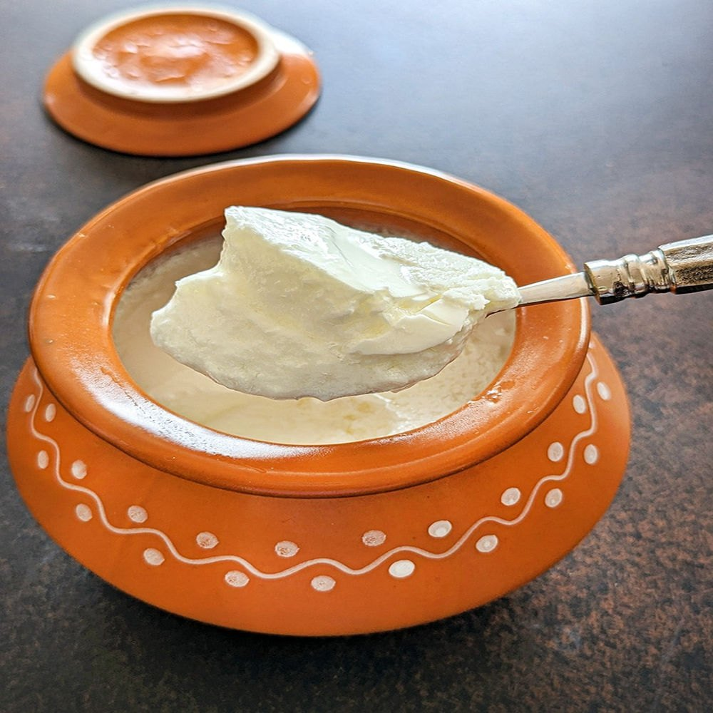

 


Raj Kachori is a large, round, hollow kachori made from refined flour (maida) and deep-fried until it's golden and crispy. It is filled with a variety of delicious ingredients, including: Chickpea flour or Potato stuffing: Sometimes a spiced potato mixture or chickpea filling is added to enhance the flavor. Yogurt (Dahi): A generous amount of fresh yogurt is poured over the kachori, making it soft and creamy on the inside. Tamarind chutney: This tangy and sweet chutney adds a distinctive flavor and balances the richness of the yogurt. Mint chutney: Fresh mint chutney provides a cool and herbal touch. Chaat masala & Spices: A mix of spices like cumin, coriander, and black salt are sprinkled on top, giving it a tangy and savory kick. Pomegranate seeds: These add a burst of sweetness and crunch, making it a refreshing experience with every bite.
